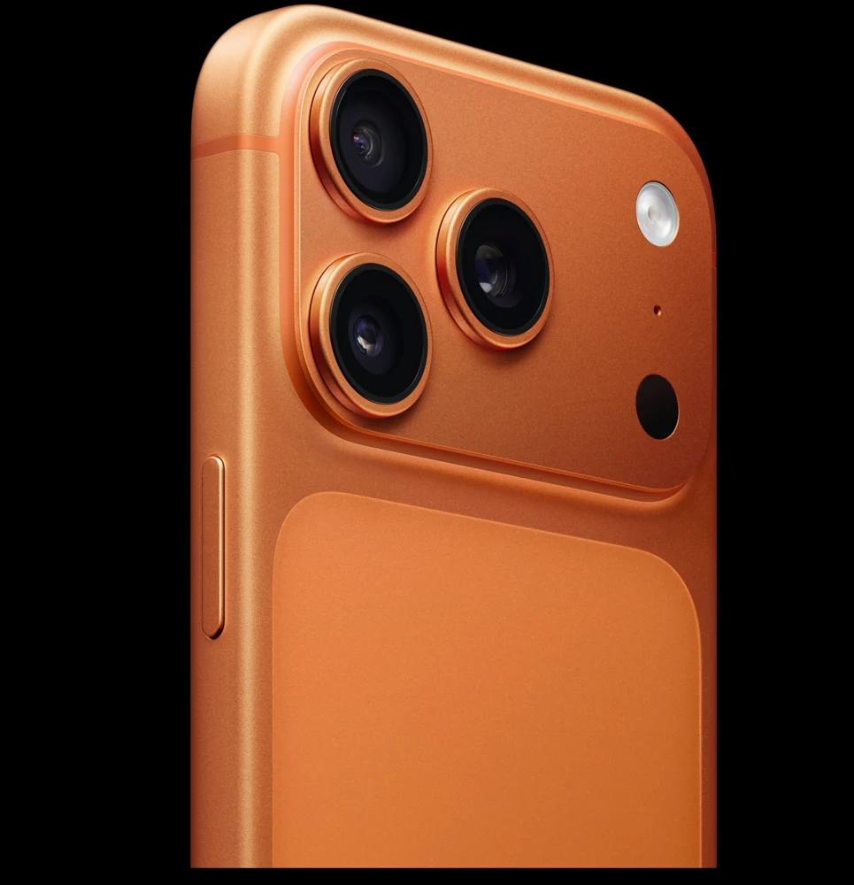

Give this phone the spotlight.
Turn clean stills, controlled moves and a sharp cut into a ten-second camera ad.
October 25, 2026 · 8:00 to 10:00 PM IST
Ten seconds. Make them count.
A camera-focused product spec ad: ten seconds, five core beats, vertical framing, no added on-screen text or voiceover.
Pick the feature. Give it five beats.
Pick the feature people should remember. For this ad, it’s the camera.
Why it matters: Ten seconds goes fast. Give the camera the spotlight instead of squeezing in every feature.
Walkthrough
- Use the orange iPhone 17 Pro reference set and focus on the camera.
- Plan a 10-second core cut with no more than five shots. Keep it 9:16.
- Show material, form, engineering and a confident reveal. Leave out added text and voiceover.
You know what each shot adds and why the camera deserves the final reveal.
Lots of features. Nothing you remember.
If a shot doesn’t help the camera reveal, cut it.
Plan the edit before the pixels.
The shot list is the order people watch. The prompt bank is where you pick the setups to make those shots.
Why it matters: Their numbers don’t line up. Match each setup to what the shot needs to do.
Walkthrough
- Sketch five roughly two-second beats: macro, form, technology, combining, reveal.
- Choose matching setups from the prompt bank. Fine detail is an option, not a compulsory extra shot.
- Keep the optional outro for a separate extended cut.
An opening, a readable phone silhouette and a camera payoff.
Trying to squeeze every setup into five shots.
Keep your strongest five beats. Drop the shots that repeat the same idea.

Get the phone right before it moves.
Make your stills in Nano Banana Pro. Give each angle a clear reference so the phone keeps its shape.
Why it matters: That odd camera bump won’t get better when it starts moving. Fix it in the still.
Walkthrough
- In Flow or OpenArt, choose Nano Banana Pro and attach only relevant references. Use a fresh Flow project for this film.
- Generate vertical frames except the macro end frame: use 16:9, then rotate it for the vertical workflow.
- For fine detail, create the difficult end frame first. Use it to guide the matching start.
- Compare lens count, flash, microphone, sensor, ports and finish. Simplify conflicting references before retrying.
- Download each approved image into its shot folder right away.
Matching structure and camera layout across both frames.
Older-phone drift, duplicated flash or changing speaker holes.
Return to the correct angle; remove a competing reference and refine the failed detail.
Tell the model where to land.
Use start and end frames when the transformation matters. Kling 3.0 is the taught primary route; Seedance 2.0 is an alternative.
Why it matters: A matching start and end tell the model where to go. Slim side and the optional outro need only a start frame.
Walkthrough
- Use the approved frame pair and its corresponding motion prompt.
- Test at lower quality first. The demonstrated OpenArt setup used 720p, five seconds and generated audio off, where supported.
- Keep the movement restrained and inspect the full clip for warping. Generate longer than the edit beat so you can trim weak ends.
- For the side-entry workaround, animate the visible phone exiting into black, then reverse the usable clip in the editor. This is a separate class technique, not the official side-view prompt.
- Upscale only the final approved motion clips with the OpenArt upscaler.
Rigid edges, stable lenses and a useful part of the move.
The phone bends or changes shape while trying to connect two mismatched frames.
Fix the endpoints, reduce movement, or test the reverse direction before spending more credits.
Trim until it has a pulse.
Bring the best bits into Filmora and cut them to ten seconds. Another editor works too if it has the same controls.
Why it matters: A clip can have a great middle and messy ends. You get to keep the great middle.
Walkthrough
- Set the project to vertical before arranging footage. Save the project and import the approved clips.
- Build the five-beat core, trim bad frames and use clean hard cuts.
- Use Speed → Speed Ramping, then adjust the curve to the footage. The class raised slow sections back toward 1x when AI footage already felt slow.
- Reverse the side move if using the entry workaround. Keep camera movement and cut direction intentional.
The pace changes, but the phone still feels like the same phone.
A shot hangs around too long, or a fancy transition hides a weak clip.
Trim the shot, simplify the cut and adjust the speed curve.
Let the lenses click.
Try a tech-house or cyberpunk pulse. Add small clicks right where the lenses move.
Why it matters: A well-timed click can make a tiny movement feel real.
Walkthrough
- Audition a usable 10 to 15-second music section, then mark its beats. Trim the final ad to ten seconds.
- Place soft texture on the macro, a whoosh on the form move, clicks on the lenses and one clean final hit.
- Lower the music slightly for key mechanical sounds. Keep reverb restrained.
- Check the source platform’s current licence before publishing.
You can hear the click or hit that belongs to each key movement.
Boom. Boom. Boom. And now you can’t hear the lenses.
Remove a layer, shorten the effects and rebalance the music.
Watch the file, not just the timeline.
Finish the colour and contrast, export the ad, and play the actual file from first frame to last.
Why it matters: People watch the exported file. Give that file a full watch before sharing it.
Walkthrough
- Make restrained colour and contrast adjustments so the orange phone and black studio agree across shots.
- Export using the settings available in your editor. MP4 was shown in class; no universal frame rate or export resolution was prescribed.
- Check 9:16, the ten-second core, consistent hardware, sound sync, gaps and the final frame.
- Share your finished film in the cohort group, as shown in class. Save the film link and your notes in your Homework copy.
A complete ad with a camera payoff and a deliberate ending.
Missing layers, black gaps, flicker or an abrupt audio cut.
Fix the timeline, export again and watch the whole file again.
The spotlight is yours.
Open the Playbook. Pick your best moments. Give this phone its ten seconds of fame.
OPEN THE PLAYBOOKOPEN HOMEWORK